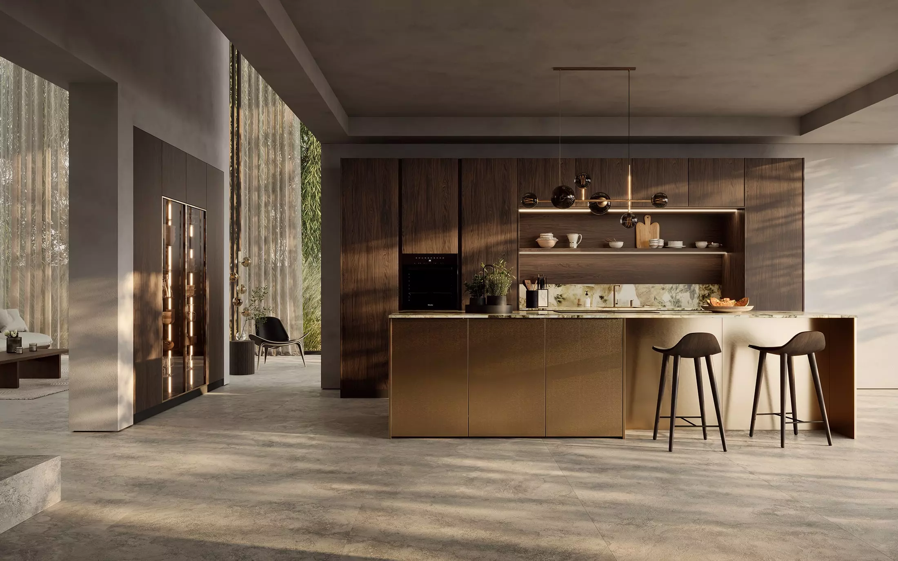

Luxury Kitchen & Bathroom Designers in Farnham
Welcome to Plum-mex Showroom — expert kitchen and bathroom designers serving Farnham and the surrounding Surrey and Hampshire areas. Our highly experienced team provides a full end-to-end service, from design through to installation, managing every stage with precision and care.
We specialise in mid-to-high-end British and German kitchens that combine style, quality, and functionality. Whether you’re looking for a sleek contemporary space or a timeless classic design, we’ll help you find the perfect finish to suit your lifestyle, taste, and budget.
Book a Free Design Consultation
Fully Tailored Kitchen Designs
At Plum-mex, our flexibility in both products and design allows us to create kitchens that are as unique as our clients. Our experienced designers and installers bring decades of hands-on knowledge, ensuring not only a beautiful result but one that is practical, efficient, and built to last.
We offer honest, professional advice at every stage — from layout and ergonomics to materials and finishes. Most of our furniture is made to order, but for anything truly bespoke we work with a specialist cabinet maker capable of crafting custom pieces to fit any space perfectly.
Explore Our Kitchen Projects
German & British Kitchen Brands
We are proud to be an official Rotpunkt German kitchen supplier — a brand celebrated worldwide for precision, innovation, and flawless craftsmanship. With a vast range of colours, textures, and finishes, Rotpunkt kitchens offer endless possibilities, from handleless modern designs to luxurious matte lacquers and anti-fingerprint doors.
Alongside Rotpunkt, we also supply Masterclass Kitchens — beautifully crafted British furniture known for timeless style and durability. With 21 ranges, 63 colours, and 334 possible combinations, Masterclass delivers true flexibility and distinctive British character in every design.
Visit Our ShowroomWhy We Choose Rotpunkt German Kitchens
At Plum-mex we partner with Rotpunkt because precision engineering, consistent quality and thoughtful innovation matter to our clients. Rotpunkt’s German manufacturing standards ensure durable, flawless finishes: every door, carcass and hinge is built to perform for years in a busy family home.
What sets Rotpunkt apart:
- Engineering & reliability: German tolerance and quality control minimise installation issues and long-term wear.
- Material choice: lacquer, ceramic, handleless and anti-fingerprint finishes that retain their look under heavy use.
- Personalisation: 24 internal carcass colours and a wide palette of door finishes allow seamless or contrasting interiors.
- Sustainability & value: efficient production methods and high-quality components that reduce lifetime replacement costs.
For clients wanting a premium German kitchen that blends form with function, Rotpunkt strikes the perfect balance between contemporary design and everyday practicality.
Learn more about our Rotpunkt kitchen collections.


Why We Trust Masterclass Kitchens
Masterclass is our go-to for British craftsmanship and timeless character. Their furniture is engineered with traditional cabinetmaking skills combined with modern production standards — ideal for clients seeking classic proportions or a heritage finish.
Masterclass strengths:
- Range & versatility: 21 ranges and 63 colours give exceptional design flexibility for period homes and contemporary schemes alike.
- High-quality materials: robust carcasses, premium veneered or painted finishes and options for solid timber details.
- Custom & made-to-order: extensive bespoke options — dovetail drawers, applied mouldings, inset doors and purpose-built storage solutions.
- Design-led solutions: Masterclass follows design trends closely while maintaining enduring quality, so your kitchen looks current for years.
If you value British-made furniture with a carefully considered finish and enduring performance, Masterclass offers a proven and versatile choice.
See examples of Masterclass installations in our portfolio.
Inspiring Kitchen Showroom Displays
Our luxury showroom in Crondall, near Farnham, features a stunning collection of Rotpunkt German and Masterclass British kitchens. Explore diverse layouts, including open-plan designs, L-shaped kitchens, islands, and breakfast bars — all designed to spark inspiration for your own home.
We also showcase working models from leading appliance brands such as Bora, Siemens, Neff, Elica, Bosch, Quooker, and Insinkerator. Visit us and see how our displays can help shape your vision for a kitchen that blends beauty, innovation, and everyday functionality.
Discover Our Latest ProjectsExplore Our Kitchen Showroom Virtually
Walk through our kitchen showroom online and explore real-life layouts, cabinetry, materials, and finishes before visiting us in person.